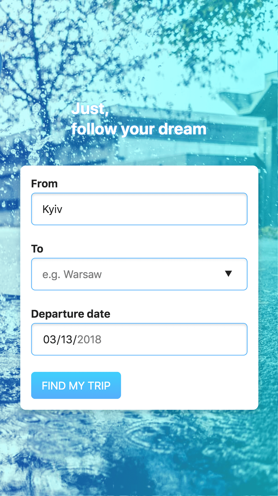

І хоч на вулиці мороз, та настрій уже квітковий.
З приходом весни все сильнішим стає бажання розвиватися,
дізнаватися щось нове, пододорожувати, адже це можливість
пізнавати себе, знімати стрес, знаходити нові навички, знайомитися
з новими людьми і культурами...
Вам пропонується зробити макет сторінки пошуку маршрутів
між двома містами відповідно до поданого зразка.
Приклад
Приклад для великих екранів

Приклад для мобільних екранів
Вимоги
-
Інтерактивні елементи реагують на дії користувача.
-
При введенні тексту в поля точок відправлення та прибуття
відображається список-підказка можливих значень.
Доступних значень може бути довільна кількість. Жодних прикладів
чи додаткових вимог не передбачається.
-
При введенні дати відображається календар, який дозволяє обрати
відповідну дати з певного періоду.
-
Виконується перевірка коректного заповнення всіх полів.
Форма не відправляється, якщо хоча б одне
поле не заповнене.
Також звертається увага на
- семантику розмітки, якість коду;
- наявність анімації взаємодій з користувачем;
- доступність на мобільних пристроях.
Aбсолютно точне відображення тіней, розмірів, відступів
не є вимогою; достатньо приблизних значень.
Демонстрація
Демонстрація взаємодії зі сторінкою
Додаткові дані
- Основний колір:
#4facfe
- Вторинний колір:
#00f2fe
- Список стандартних системних шрифтів:
-apple-system, BlinkMacSystemFont, 'Segoe UI', Roboto,
Oxygen-Sans, Ubuntu, Cantarell, 'Helvetica Neue', Helvetica, Arial,
sans-serif
- Точка розриву мобільного й основного макету —
480px
Фонове зображення
надається.